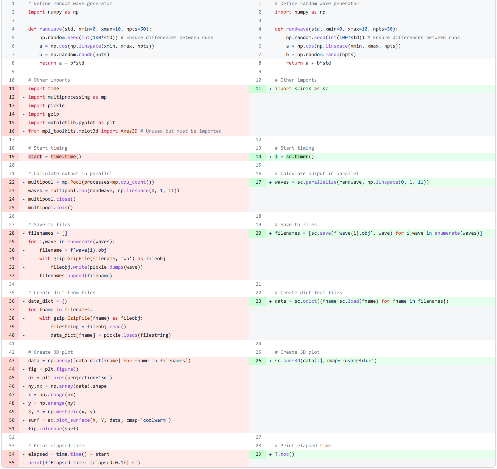
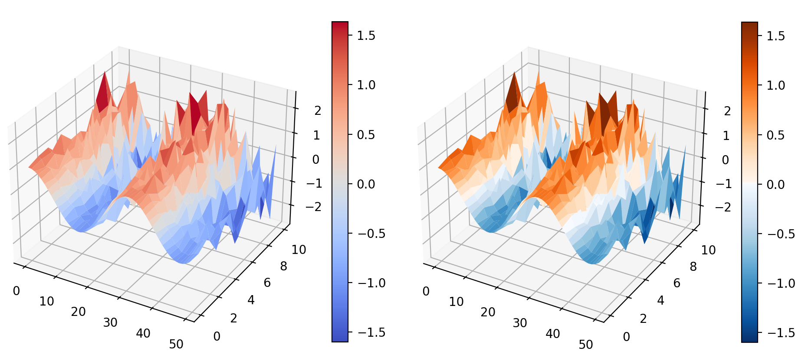

Overview


What is Sciris?
Glad you asked! Sciris (http://sciris.org) is a library of tools that can help make writing scientific Python code easier and more pleasant. Built on top of NumPy and Matplotlib, Sciris provides functions covering a wide range of common math, file I/O, and plotting operations. This means you can get more done with less code, and spend less time looking things up on StackOverflow. It was originally written to help epidemiologists and neuroscientists focus on doing science, rather than on writing coding, but Sciris is applicable across scientific domains.
Sciris is available on PyPI (pip install sciris) and GitHub. Full documentation is available at here. The paper describing Sciris is available here. If you have questions, feature suggestions, or would like some help getting started, please reach out to us at info@sciris.org.
Highlights
Some highlights of Sciris (import sciris as sc):
- Powerful containers – The
sc.odictclass is whatOrderedDict(almost) could have been, allowing reference by position or key, casting to a NumPy array, sorting and enumeration functions, etc. - Array operations – Want to find the indices of an array that match a certain value or condition?
sc.findinds()will do that. How about just the nearest value, regardless of exact match?sc.findnearest(). What about the last matching value?sc.findlast(). Yes, you could donp.nonzero()[0][-1]instead, butsc.findlast()is easier to read, type, and remember, and handles edge cases more elegantly. - File I/O – One-liner functions for saving and loading text, JSON, spreadsheets, or even arbitrary Python objects.
- Plotting recipes – Simple functions for mapping sequential or qualitative data onto colors, manipulating color data, and updating axis limits and tick labels, plus several new colormaps.
I’m not convinced.
That’s OK. Perhaps you’d be interested in seeing what a script that performs tasks like parallelization, saving and loading files, and 3D plotting looks like when written in “vanilla Python” (left) compared to using Sciris (right):

Both of these do the same thing, but the plain Python version (left) requires 50% more lines of code to produce the same graph as Sciris (right):

Where did Sciris come from?
Development of Sciris began in 2014 to support development of the Optima suite of models. We kept encountering the same issues and inconveniences over and over while building scientific webapps, and began collecting the tools we used to overcome these issues into a shared library. This library evolved into Sciris. (Note: while “Sciris” doesn’t mean anything, “iris” means “rainbow” in Greek, and the name was loosely inspired by the wide spectrum of scientific computing features included in Sciris.)
To give a based-on-a-true-story example, let’s say you have a dictionary of results for multiple runs of your model, called results. The output of each model run is itself a dictionary, with keys such as name and data. Now let’s say you want to access the data from the first model run. Using plain Python dictionaries, this would be results[list(results.keys())[0]]['data']. Using a Sciris sc.objdict, this is results[0].data – almost 3x shorter.
Where has Sciris been used?
Sciris is currently used by a number of scientific computing libraries, including Atomica and Covasim. ScirisWeb, a lightweight web framework built on top of Sciris, provides the backend for webapps such as the Cascade Analysis Tool, HIPtool, and Covasim.
Features
Here are a few more of the most commonly used features.
Containers
sc.odict(): flexible container representing the best-of-all-worlds across lists, dicts, and arrayssc.objdict(): like an odict, but allows get/set via e.g.foo.barinstead offoo['bar']
Array operations
sc.findinds(): find indices of an array matching a value or conditionsc.findnearest(): find nearest matching valuesc.smooth(): simple smoothing of 1D or 2D arrayssc.isnumber(): checks if something is any number typesc.tolist(): converts any object to a list, for easy iterationsc.toarray(): tries to convert any object to an array, for easy use with NumPy
File I/O
sc.save()/sc.load(): efficiently save/load any Python object (via pickling)sc.savejson()/sc.loadjson(): likewise, for JSONssc.thisdir(): get current foldersc.getfilelist(): easy way to access glob
Plotting
sc.hex2rgb()/sc.rgb2hex(): convert between different color conventionssc.vectocolor(): map a list of sequential values onto a list of colorssc.gridcolors(): map a list of qualitative categories onto a list of colorssc.plot3d()/sc.surf3d(): easy way to render 3D plotssc.boxoff(): turn off top and right parts of the axes boxsc.commaticks(): convert labels from “10000” and “1e6” to “10,000” and “1,000,0000”sc.SIticks(): convert labels from “10000” and “1e6” to “10k” and “1m”sc.maximize(): make the figure fill the whole screensc.savemovie(): save a sequence of figures as an MP4 or other movie
Parallelization
sc.parallelize(): as-easy-as-possible parallelizationsc.loadbalancer(): very basic load balancer
Other utilities
sc.readdate(): convert strings to dates using common formatssc.tic()/sc.toc(): simple method for timing durationssc.runcommand(): simple way of executing shell commands (shortcut tosubprocess.Popen())sc.dcp(): simple way of copying objects (shortcut tocopy.deepcopy())sc.pr(): print full representation of an object, including methods and each attributesc.heading(): print text as a ‘large’ headingsc.colorize(): print text in a certain colorsc.sigfig(): truncate a number to a certain number of significant figuressc.search(): search for a key, attribute, or value in a complex objectsc.equal(): check whether two or more complex objects are equal
Installation and run instructions
- Install Sciris:
pip install sciris(orconda install -c conda-forge sciris) - Use Sciris:
import sciris as sc - Do science (left as an exercise to the reader).
AI integration
Sciris has MCP servers available on Context 7 and GitMCP; these improve the ability of AI agents to understand and write Sciris code. Sciris also has a built-in Claude Code plugin (which can be used with other LLMs via OpenSkills). To use, first add the Sciris repository (https://github.com/sciris/sciris) to the Claude Code marketplace, and then installing the plugin from there. The plugin provides skills covering all Sciris features, including arrays, dicts, file I/O, plotting, parallelization, dates, printing, utilities, and advanced features.
Citation
To cite Sciris, cite the paper:
Kerr CC, Sanz-Leon P, Abeysuriya RG, Chadderdon GL, Harbuz VS, Saidi P, Quiroga M, Martin-Hughes R, Kelly SL, Cohen JA, Stuart RM, Nachesa AN. Sciris: Simplifying scientific software in Python. Journal of Open Source Software 2023 8 (88):5076. DOI: https://doi.org/10.21105/joss.05076
The citation is also available in BibTeX format.